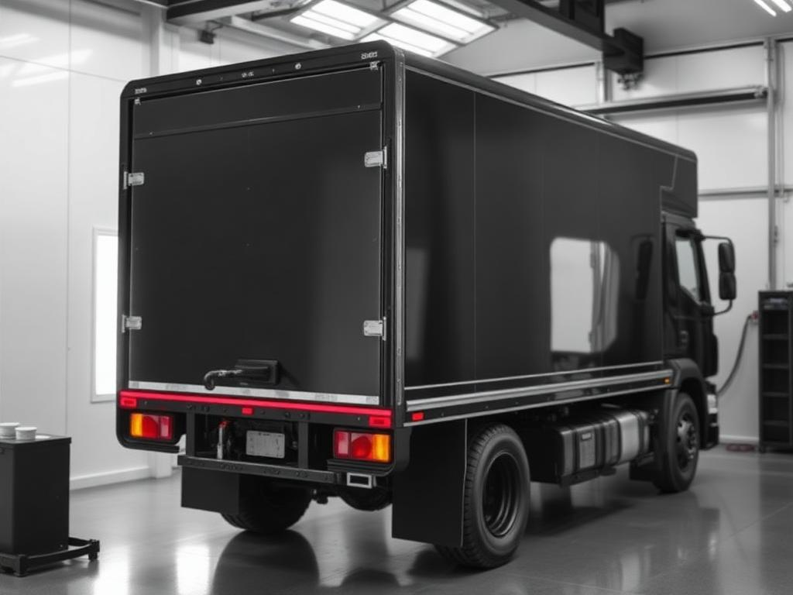

Reforma de Sider
Renovação completa de frota sider para transportadora regional
Recuperação estrutural e troca de lonas em 24 unidades com cronograma escalonado, sem paralisar a operação.
Especialistas em reforma de Baú, Sider, Carroceria de Bebidas e Protetor Lateral Homologado em Sumaré/SP. Conhecimento técnico avançado com paixão pela excelência desde 2010.
Desde 2010, somos referência em implementos rodoviários em Sumaré e região de Campinas/SP. Nossa visão é ser referência nacional em reformas, guiados pela satisfação dos clientes e pelo compromisso com a excelência.
Com uma área de 1.000 m², nossa equipe especializada une anos de experiência a conhecimento técnico avançado. Cada projeto é tratado com o mais alto nível de habilidade e atenção aos detalhes.
Soluções completas para o transporte rodoviário em Sumaré e região de Campinas/SP — da modernização à homologação.
Modificações precisas para ampliar espaço e capacidade do veículo, mantendo integridade estrutural e segurança nas estradas.
Acabamento excepcional com precisão técnica — visual impressionante e proteção duradoura contra intempéries e corrosão.
Renovação estrutural e modernização estética completa para carrocerias sider, ampliando vida útil e eficiência operacional.
Instalação profissional com segurança e durabilidade — ajuste perfeito e fixação confiável para qualquer carroceria.
Fabricação e instalação conforme norma CONTRAN 323/09, obrigatório para veículos com PBT acima de 3.500 kg.
Recuperação completa de baús — estrutura, isolamento térmico e acabamento como novos. Ideal para frotas de distribuição.
Processos comprometidos com o meio ambiente e práticas responsáveis na reforma de carrocerias.
Cronogramas rigorosamente cumpridos — sua frota de volta à operação no tempo combinado.
Equipamentos e técnicas atualizadas para resultados precisos e duradouros.
Inspeção em cada etapa da reforma, garantindo entrega impecável e segura.
Mais de 40 especialistas com décadas de experiência no setor rodoviário.
Fabricação e instalação de protetores laterais conforme norma CONTRAN 323/09.
Cada reforma é tratada com habilidade técnica e atenção aos detalhes — resultados que superam as expectativas.
Recuperação estrutural e troca de lonas em 24 unidades com cronograma escalonado, sem paralisar a operação.

Reforma de BaúRecuperação estrutural, novo isolamento térmico e pintura completa em frota dedicada à distribuição.
Grade baixa sob medida com acabamento premium e protetor lateral homologado conforme CONTRAN 323/09.
Orçamento sem compromisso para reforma de carroceria. Nossa equipe responde em até 24h com uma proposta sob medida para a sua frota.